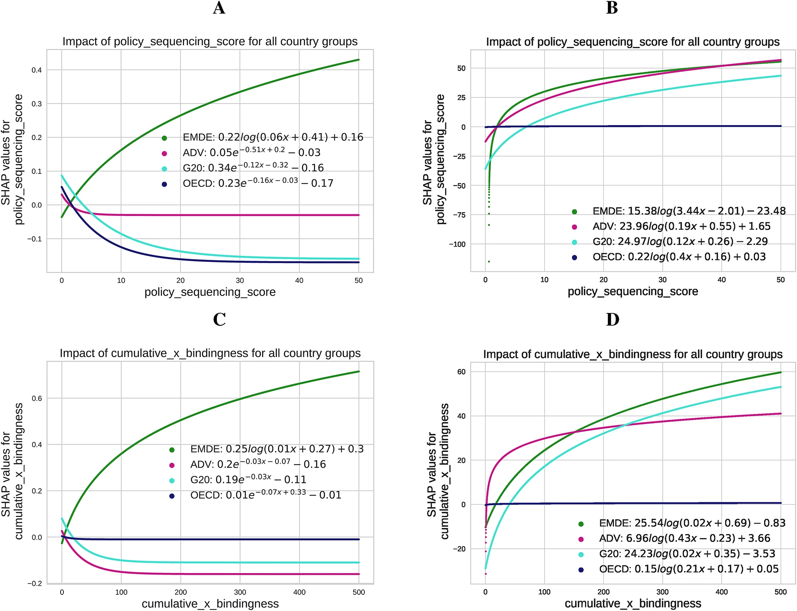
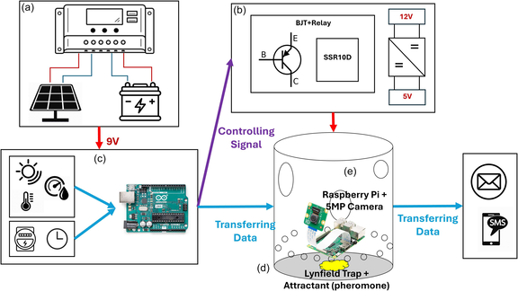
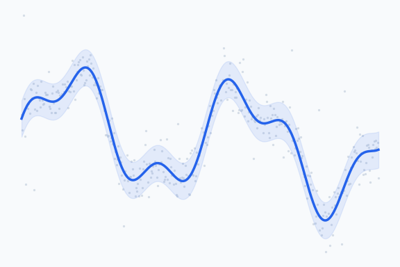
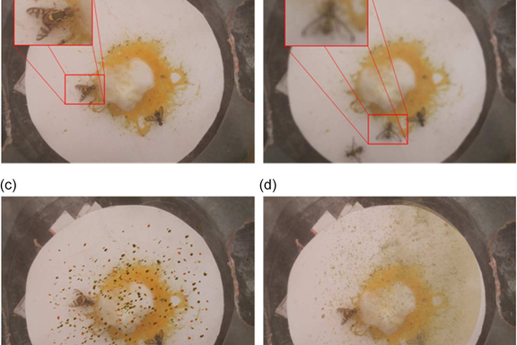
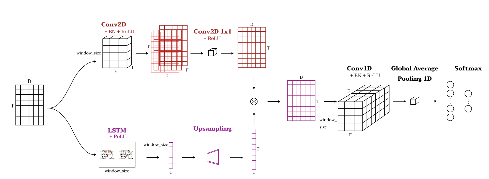
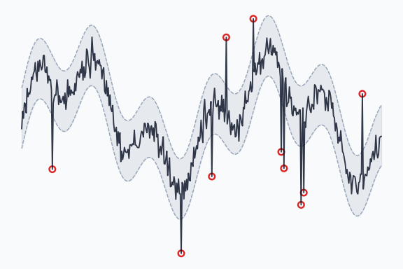
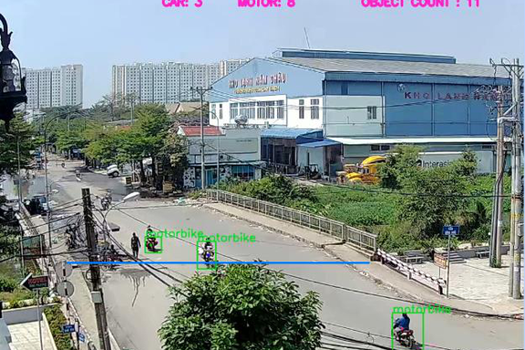
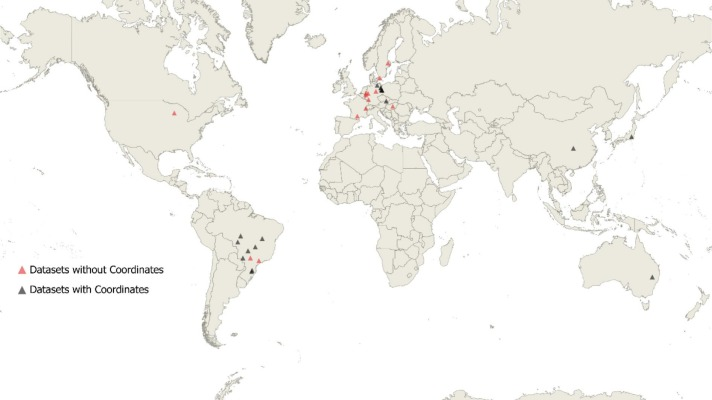

Anh-Duy Pham
Machine Learning Researcher
Focus Areas
Technical Skills
About Me
I am a machine learning researcher currently looking for a PhD position in AI/ML in Berlin. Until July 2026, I was a Doctoral Researcher at the Chair of Logistics and Quantitative Methods at the Julius-Maximilians-Universität Würzburg. My research is situated at the intersection of advanced machine learning and operations management.
Specifically, I focus on graph-based time series forecasting to enable data-driven decision-making in supply chain management. I combine this with expertise in Agent-based Modelling to simulate and analyze complex economic and environmental systems.
My academic background is rooted in Generative Deep Learning and Computer Vision, having developed novel deepfake autoencoders using StyleGAN and Vision Transformers during my Master's. I have previously applied these skills to biometrics and CAE simulations at various Fraunhofer institutes.
News
-
Jul 2026
Concluded my position at Julius-Maximilians-Universität Würzburg. I am now looking for an AI/ML PhD position in Berlin — get in touch!
-
May 2026
New preprint: "In-Context Learning for Data-Driven Censored Inventory Control" (with S. Mukherjee, R. Pibernik, and Y. Xu) is now on arXiv.
-
2026
"Interpretable Prosumer Load Forecasting via Physics-Informed Kolmogorov-Arnold Networks" (with R.T. Derzbach, A. Dhakal, and C.M. Flath) accepted at ACM e-Energy.
-
Jan 2026
Preprint of AMBER, a columnar architecture for high-performance agent-based modeling in Python, is now on arXiv.
-
2026
Our paper "When pandemics meet climate risk" (with P. D'Orazio and S.H. Nguyen) is in press at the Journal of Economic Dynamics and Control.
-
Dec 2025
"Belief-Aware Inventory Control with Deep Mixture Models" (with M. Beck) presented at the NeurIPS 2025 MLxOR Workshop.
-
2025
LimeSoDa, our benchmark dataset collection for digital soil mapping, published in Geoderma.
-
Apr 2025
Joined the Chair of Logistics and Quantitative Methods at Julius-Maximilians-Universität Würzburg as a Doctoral Researcher.
-
Jan 2025
"Evaluating climate-related financial policies' impact on decarbonization with machine learning methods" published in Scientific Reports.
Experience & Education
Seeking PhD Position
Jul 2026 - PresentLooking for a PhD position in artificial intelligence and machine learning. Get in touch.
Doctoral Researcher
Apr 2025 - Jul 2026Chair of Logistics and Quantitative Methods. Researched graph-based time series forecasting for supply chains.
PhD Student
Dec 2023 - Mar 2025Joint Lab Artificial Intelligence & Data Science.
Research Assistant & Master Student
2019 - 2023- M.Sc. Autonomous Systems, Hochschule Bonn-Rhein-Sieg (Focus: Generative AI).
- Research Assistant, Fraunhofer HHI (Biometrics).
- Research Assistant, Fraunhofer SCAI (ML for CAE Simulations).
- Research Assistant, Ruhr-Universität Bochum (Agent-based Economic Modeling).
Research & Teaching Assistant
Oct 2017 - Jul 2019Electrical Engineering and Information Technology department.
Recent Highlights
Scientific Reports Publication
"Evaluating climate-related financial policies' impact on decarbonization with machine learning methods." · 28 citations
Accepted: Journal of Economic Dynamics and Control
"When pandemics meet climate risk: An agent-based model of non-linear macroeconomic dynamics under compound stress."
Selected Publications
View all on Scholar
Evaluating climate-related financial policies' impact on decarbonization with machine learning methods
P D'Orazio, AD Pham

AlertTrap: A study on object detection in remote insects trap monitoring system using on-the-edge deep learning platform
AD Le, DA Pham, DT Pham, HB Vo

Accuracy improvement of various short-term load forecasting models by a novel and unified statistical data-filtering method
DM Bui, PD Le, MT Cao, TT Pham, DA Pham

AlertTrap: On Designing An Edge-Computing Remote Insect Monitoring System
DA Pham, AD Le, DT Pham, HB Vo

TSEM: Temporally-Weighted Spatiotemporal Explainable Neural Network for Multivariate Time Series
AD Pham, A Kuestenmacher, PG Ploeger

A statistical data-filtering method proposed for short-term load forecasting models
DM Bui, PD Le, TM Cao, H Nguyen, TT Pham, DA Pham

A PM2.5 concentration prediction framework with vehicle tracking system: From cause to effect
CD Le, HV Pham, DA Pham, AD Le, HB Vo

LimeSoDa: A dataset collection for benchmarking of machine learning regressors in digital soil mapping
J Schmidinger, S Vogel, V Barkov, AD Pham, R Gebbers, et al.
Blog & Tutorials

Simulating a collapsing star cluster with AMBER
An N-body astrophysics model — cold collapse and violent relaxation — built in AMBER, Mesa, and AgentPy: identical physics, ~20× faster in AMBER.
Read tutorialWelcome to my research blog
What to expect here: tutorials on graph-based forecasting, agent-based modelling, and explainable AI — plus notes from the PhD trenches.
Read post